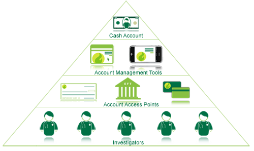

greenphire's Investigator Payments System ("IPS") is designed to speed the delivery of investigator payments, provide a robust account management platform to each investigator and create brand loyalty between the investigator and our client.
The Investigator Payments System leverages greenphire's proprietary electronic communication technology platform to notify investigators by email and text message the moment that funds hit the cash account. Once an investigator is notified that a new payment has been made, the investigator can log into his/her account to manage those funds via either a web based investigator portal or a mobile application downloaded directly to the investigators' smart phone.
Once logged in, investigators have several flexible ways to receive and use each payment. Three standard account access points are made available to each investigator:
- Electronic Funds Transfer - The investigator can set up one-time or automatic electronic funds transfers to up to 100% of a new payment into one or more designated deposit account(s).
- Debit Card - The investigator may access his/her payments directly through an ATM, store location or online via a MasterCard debit card that operates on the MasterCard, Cirrus, NYCE and STAR financial networks.
- Traditional Check - If desired, an investigator may request that a traditional check be mailed to be cashed at any bank location.
Each investigator can manage his/her payment account through two account management tools, a web portal and via a mobile phone application. These tools allow the investigator to review payment details that are associated with each deposit and withdrawal, setup electronic funds transfers, request a check payment, manage his/her debit card and learn additional information about the trials in which he/she is participating.
On the back end, greenphire's system can integrate with a variety of systems (CTMS, EDC, IVR, HRMS etc.) and will provide data back to our client in a variety of possible data formats which help facilitate painless integration into our clients' internal systems. greenphire's technical integration capabilities allow us to help automate the release of funds to investigators and speed the delivery of payments.